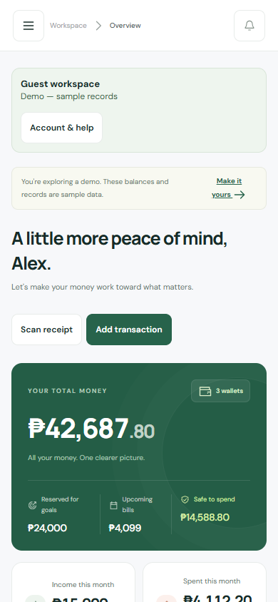
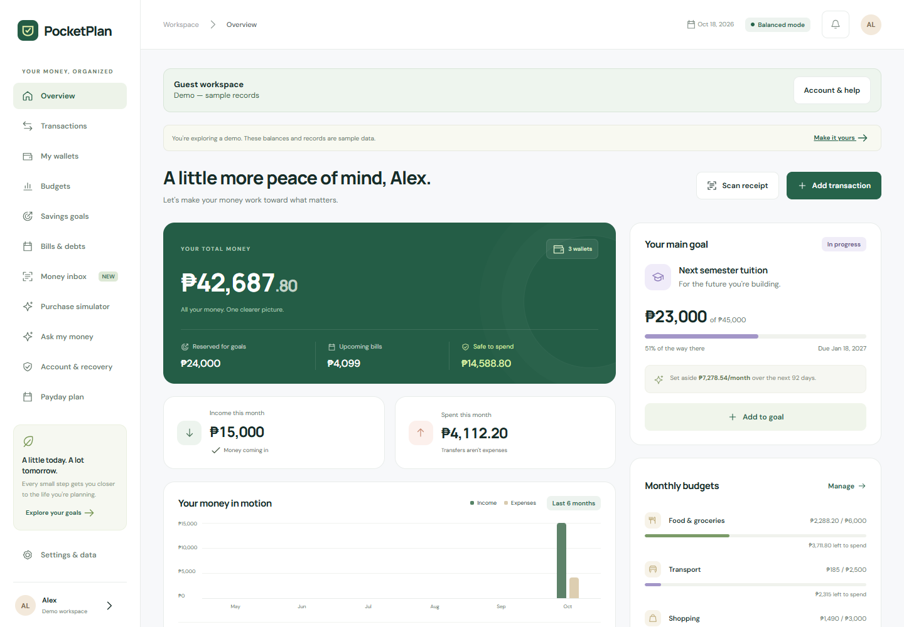
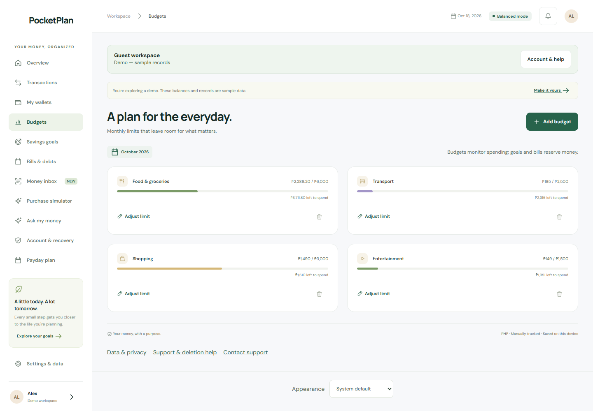
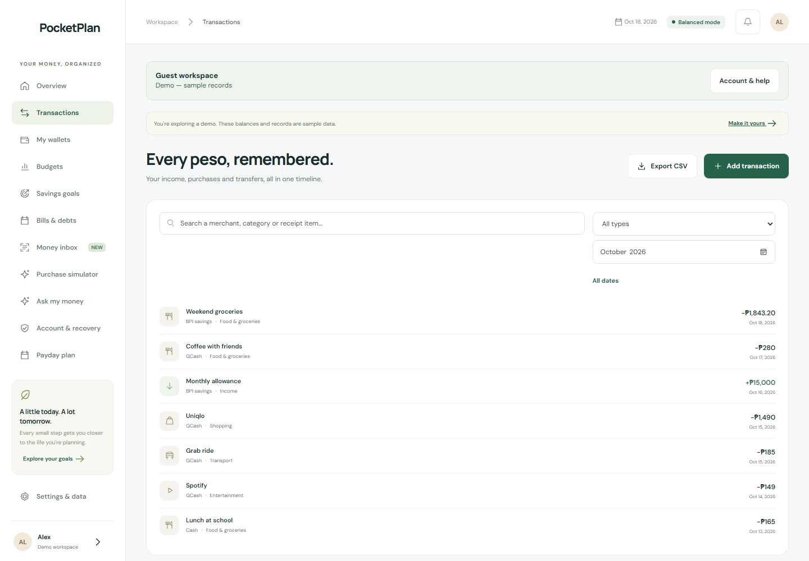

Everyday tracking
Wallets, income, expenses, transfers, transaction history, and category budgets.
APPLICATION DESIGN & DEVELOPMENT
A personal-finance website and installable web app for organizing everyday money, commitments, and future plans.
On the welcome screen, choose Explore the demo. No sign-in or bank connection is needed for the sample workspace.

01 / THE IDEA
Wallet balances, everyday expenses, tuition goals, and upcoming bills are easier to understand when they are considered together. PocketPlan brings those records into a single workspace, with a focus on Philippine pesos.
The app tracks amounts entered by the user. It does not connect to a bank or show live bank balances. The portfolio screenshots show the built-in fictional demo, not anyone’s personal financial records.
02 / THE WORKSPACE



03 / WHAT THE PROJECT COVERS
Wallets, income, expenses, transfers, transaction history, and category budgets.
Savings goals, bills, debts, and a purchase simulator for exploring a planned expense.
Local browser OCR extracts receipt information for manual review. Readings can be wrong and need checking.
Google sign-in, Supabase cloud saving, recovery features, and downloadable backups are part of the ongoing project.
04 / DEVELOPMENT FOCUS
The project brings together responsive screens, forms, money calculations, local state, authentication, cloud persistence, and recovery behavior. These are the areas I’m developing and refining through PocketPlan.
The money assistant uses application rules rather than an external AI service. Receipt OCR is a separate local text-recognition feature.
05 / CURRENT STATUS
PocketPlan is publicly available as a web app and is presented here as in development / public beta. It is not an App Store or Google Play release.
This case study does not claim measured business results, an independent security audit, or a finished commercial product. The portfolio update documents the project; app development continues separately.
Portfolio preview checked: the public demo opens without sign-in, and sample Overview, Budgets, and Transactions screens were captured. Account, cloud, and recovery functions were not retested for this presentation.
EXPLORE AT YOUR OWN PACE
Start with the sample workspace to look around without entering your own finances.
Visit PocketPlan ↗Back to selected projects